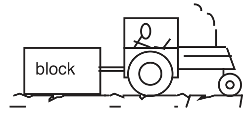
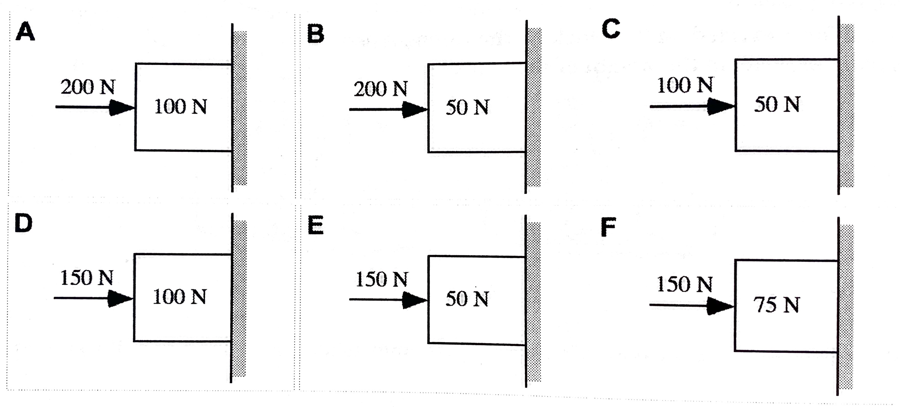
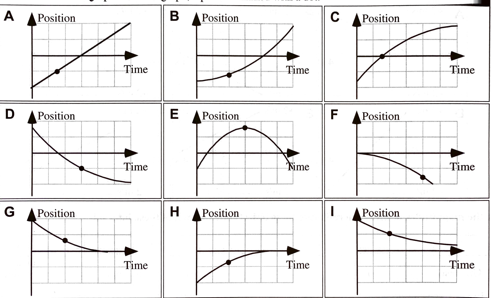
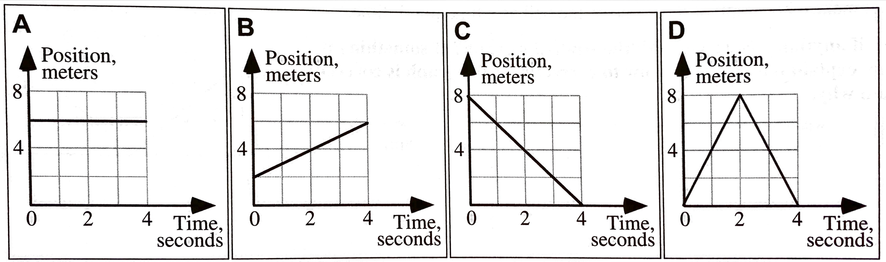
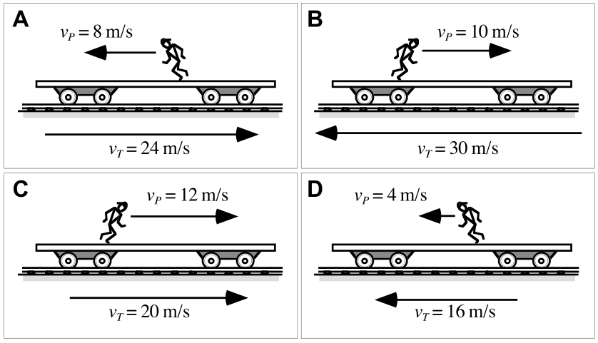
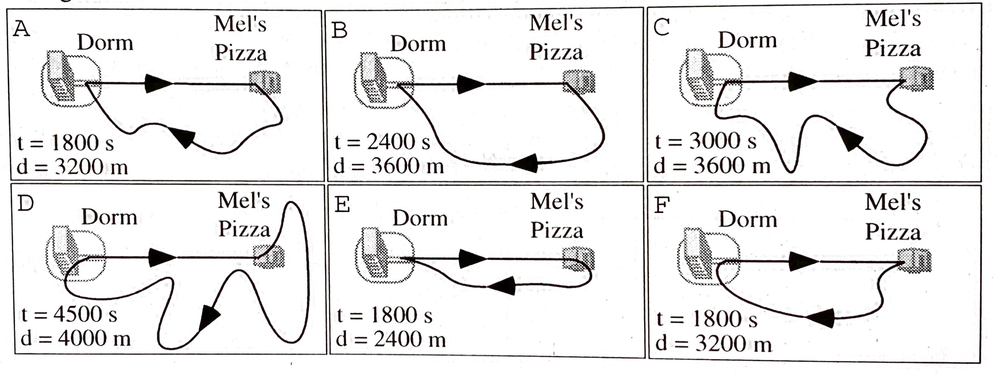

layout: true <div class="my-header"><img src="images/scsdLogo.png" style="height: 70px;"/></div> --- ##.gray[2021.12.01] .blue[AP Physics] .red[Agenda] .qotd[❓of the 📅: What song do you put on when you want to get pumped?] 1. Do Now - Porter Packet, Elevator Problems - Draw VT Graph at Table 2. Elevator Problems 3. Solving N2L Problems Note: We will finish the friciton lab on Friday HW: - AP Workbook 2.C & 2.D --- ##.gray[2021.11.30] .blue[AP Physics] .red[Agenda] .qotd[❓of the 📅: Do you have any snowday rituals/routines/traditions? ❄⛄] 1. Do Now: Finish Collecting Lab Data 2. Complete Pivot Questions 3. Whiteboard Results 4. Board Meeting 5. Workbook 2.C HW: - AP Workbook 2.A & 2.B --- ##.gray[2021.11.29] .blue[AP Physics] .red[Do Now] Does your fan cart move with a constant acceleration? Why or why not? How could you experimentally determine the answer to this question? What evidence would you need to determiine if your cart moves with a constant acceleration? -- **Experimentally determine the acceleration of your fan cart on setting 1** -- Draw the free-body diagram for your fan cart. Does the unbalanced force change during the acceleration? Why or why not? --- ##.gray[2021.11.29] .blue[AP Physics] .red[Agenda] .qotd[❓of the 📅: What is your favorite color 🌈?] 1. Do Now: Lab Intro 2. Fan Cart Lab - Collect Data and complete Pivot 3. Fan Cart Lab - Whiteboard results 3. Fan Cart Lab - Board Meeting and Conclusions 4. N2L HW: - AP Workbook 2.A & 2.B --- # Fan Cart Lab ❓ What factors affect the acceleration of the fan cart? What can we change? What can we measure? --- ##.gray[2021.11.22] .blue[AP Physics] .red[Do Now] On a whiteboard with your group... A salt shaker is pushed so that it slides across a table. Once it is released, the salt shaker stops before reaching the edge of the table. 1. Draw a velocity time graph representing the motion of the salt shaker. 2. Draw the Free Body Diagram (FBD) for the salt shaker at the following moments: 1. Before the push 2. During the pushed 3. After the push, before the shaker stops sliding --- ##.gray[2021.11.22] .blue[AP Physics] .red[Agenda] .qotd[❓of the 📅: Would you rather be a superhero or super villain?] 1. Do Now 2. Friction Lab --- class: center, middle #What is static friction? --- class: center, middle # How do we measure static friction? --- class: center, middle #What factors could affect how much static friction is on an object? --- #Friction Lab Design a lab, or series of mini experiments to quantitiatively determine what factors affect static friction. --- ##.gray[2021.11.18] .blue[AP Physics] .red[Agenda] .qotd[❓of the 📅: What is one destination on your bucket list?] 1. **Do Now** Finish Spring Force Lab 2. Spring Force Board Meeting 3. Spring Force Practice Derivation 4. Friction -- lets think about it and take quick data **HW**: - Enjoy *your* long weekend...AP Workbook returns after Thanksgiving - *If we don't finish the friction pivot...then that is homework...so lets be productive and finish! --- #Spring Force **Essential Question**: How does the elongation (stretch) of your spring relate to the amount of force applied to the spring? 1. Collect data from both springs (small spring and ceiling spring) 2. Use different masses and your knowledge about the weight of an object to determine the force on your spring -- Board Meeting: - What was the mathematical relationship? - What does the slope represent? (the [y-variable] changes by [slope] [y units] for every 1 [x units] of [x variable]) - What does the intercept represent? Is is negigible or non-negligible? --- #Spring Force ##$$|\vec{F_s}| = k|\vec{x}|$$ --- #Test the model: You want to use your spring as a mass measuring device. On a whiteboard... 1. Derive an expression the for the mass `\(m\)` of a unknown hanging mass in terms of the stretch `\(x\)` of your spring, the spring constant `\(k\)` and any known physical constants. 2. Hang something in the classroom of unknown mass on one of your springs, use the derivation to determine the mass of that object. (Note: use 9.8 for `\(g\)`) 3. Check your results using the electronic balance. --- ##Lets think about Friction... .center[] A tractor is trying to pull a very heavy block of concrete across a rough concrete floor, but is unable to move it. **Draw a free body diagram for the concrete block.** What is the direction of the friction (resistive) force alone exerted on the block? -- The Tractor increases its tension force on the block. What happens to the magnitude of the frictional force on the block? -- The tractor continues to increase its frictional force, what will eventually happen? -- 🧠⛈️ What other factors could affect the frictional force? --- ##Lets think about Friction... Boxes are held at rest against rough vertical walls by forces pushing horizontally on the boxes as shown. .center[] 1. Draw a freebody diagram and vector addition diagram for situation A. -- 2. Rank the weights of the boxes. -- 3. Rank the magnitude of the normal forces exerted on the boxes by the wall. -- 4. Rank the fricitonal forces on the boxes exerted by the walls -- 5. What conditions would need to be satisified for the boxes to slide down the wall? --- #Friction Simulation Lab **Essential Question**: *How does the normal force affect the static frictional force on an object on different surfaces?* --- **.gray[2021.11.16] .blue[AP Physics] .red[Do Now]** .small[A student uses a string to pull a block across a table at a constant speed of 2 meters per second. The string makes an angle θ with the horizontal. A second student makes a free-body diagram of the block, and then uses this free-body diagram to generate a vector sum diagram as shown.] .center[<img src="images\Fbddonow1.jpg" width ="300 px"/><img src="images\Fbddonow2.jpg" width ="500 px"/>] .small[Three Students are comparing the magnitudes of the forces in the vector sum diagram. Determine **what is correct** in each statement. **Anja**: *The vector sum diagram allows us to compare the magnitudes of all four forces: The weight is the largest, then the tension, then friction, then the normal force.* **Barb**: *Well, the weight is definitely greater than the normal force. But there should be a net force to the right in the vector sum because that's the way the block is moving, and there isn't. I don't think we can use it to rank the other forces.* **Cole**: *I think we can use it to say that the weight is greater than the normal force. Also, the tension is greater than the friction, since the friction is the same length as the dashed line, and this is equal to the tension times the cosine of theta (θ). But we can't compare the vertical forces with the horizontal ones.*] --- ##.gray[2021.11.16] .blue[AP Physics] .red[Agenda] .qotd[❓of the 📅: What is your favorite animated movie?] 1. Do Now 2. Practice FBDs (Finish page 73 & 74) 3. Discuss Gravity Lab 4. Spring Force Lab 5. Practice Derivation --- #Gravity Lab 1. Discuss your results to your group: - What was the mathematical relationship? - What does the slope represent? (the [y-variable] changes by [slope] [y units] for every 1 [x units] of [x variable]) + Have you seen this number before? How do you think it is related to that? - What does the intercept represent? Is is negigible or non-negligible? --- ##.gray[2021.11.15] .blue[AP Physics] .red[Agenda] .qotd[❓of the 📅: What are some of your favorite holiday traditions that you do?] 1. Free Body Diagram Notes 2. Free Body Diagram Card Sort 3. FBD Problems in Porter Packet 4. `\(\vec{F}_g\)` Pivot (Finish for Homework) --- ##.gray[2021.11.12] .blue[AP Physics] .red[Agenda] .qotd[❓of the 📅: What skill or talent do you most want to learn?] 1. Interaction Stations 2. Force Definitions 3. Dueling Fan Carts 4. Force Diagrams --- #Interaction Stations ##Contact Interactions Interaction between two objects that results in **compression**, **tension** or **shearing**. -- **Compression** ➡ Squishing a material together -- **Stretch** ➡ Extension of a material -- **Shearing** ➡ Pulling surfaces parallel to each other --- class:center, middle # A ***force*** is an interaction between two objects. --- #Interaction types - **Gravitational Force** `\(\vec{F}_g\)` (Long Range) ➡ Attractive force between all objects with mass -- - **Normal Force** `\(\vec{F}_N\)` (Contact, Compression) ➡ "Perpendicular Force" occurs because atoms are compressed and want to return to original position. **Always perpendicular to surfaces in contact** -- - **Spring Force** `\(\vec{F}_s\)` (Contact, Stretch or Compression) ➡ Spring is stretched or compressed and wants to return to "natural" length -- - **Tension** `\(\vec{F}_T\)` (Contact, Stretch) ➡ Atomic Structure is stretched and wants to return to natural length -- - **Friction** `\(\vec{F}_f\)` (Contact, Shear) ➡ Irregular surfaces interlock to slow or prevent sliding of two surfaces relative to eachother **Always parallel to the surfaces in contact** -- - **Drag** `\(\vec{F}_D\)` (Contact) ➡ Fluid/gas Friction, resists objects motion through a fluid/gas -- - **Bouyant Force** `\(\vec{F}_B\)` (Contact) ➡ Fluid/Gas Normal Force -- - Electrostatic Force `\(\vec{F}_e\)` (Long Range) - Attractice or resistive force because objects have charge -- - Magnetic Force `\(\vec{F}_M\)` (Long Range) - Attractive or repulsive force because of moving charge --- ##.gray[2021.11.10] .blue[AP Physics] .red[Agenda] .qotd[❓of the 📅: How often do you dance?] 1. Whiteboard Assigned Mallet Ball Situations 2. Mallet Ball Board Meeting 1. Tug-of-War Simulation 1. Dueling Fan Carts 1. Interaction Stations 2. Defining Force **HW:** - Test Corrections Due Friday --- #Mallet Ball - How do mallet taps affect the motion of the bowling ball? --- ###Tug-of-War Simulation [Simulation Link](https://phet.colorado.edu/sims/html/forces-and-motion-basics/latest/forces-and-motion-basics_en.html?screens=1) Note: check all 3 boxes in the top right True/False: Determine whether each of the following statements are true. Support your claims with evidence and examples. (Remember that you can add/remove people while the cart is moving.) 1. A person's location on the rope matters. 2. Different combinations of people can produce the same sum of forces. 3. The sum of the forces on the cart is always equal to the addition of the individual forces. 4. It is impossible for the cart to accelerate to the left if there are people pulling it to the right. 5. The side with the bigger person will always win. 6. The side with more people will always win. 7. It is impossible to make the cart decrease in speed. 8. It is impossible to make the cart move at a steady speed. 9. The cart will always move in the direction of the sum of the forces. 10. If the sum of the forces is zero, the cart must be at rest. --- ##Tug-of-War Simulation Summary: - Make an argument (claim-evidence-reasoning) for how forces/combinations of force lead to: + Constant Velocity + Acceleration --- #Interaction Stations ##Contact Interactions Interaction between two objects that results in **compression**, **tension** or **shearing**. -- **Compression** ➡ Squishing a material together -- **Extension** ➡ Stretching a material -- **Shearing** ➡ Pulling surfaces parallel to each other --- class:center, middle # A ***force*** is an interaction between two objects. --- #Interaction types - **Gravitational Force** `\(\vec{F}_g\)` (Long Range) ➡ Attractive force between all objects with mass -- - **Normal Force** `\(\vec{F}_N\)` (Contact, Compression) ➡ "Perpendicular Force" occurs because atoms are compressed and want to return to original position. **Always perpendicular to surfaces in contact** -- - **Spring Force** `\(\vec{F}_s\)` (Contact, Stretch or Compression) ➡ Spring is stretched or compressed and wants to return to "natural" length -- - **Tension** `\(\vec{F}_T\)` (Contact, Stretch) ➡ Atomic Structure is stretched and wants to return to natural length -- - **Friction** `\(\vec{F}_f\)` (Contact, Shear) ➡ Irregular surfaces interlock to slow or prevent sliding of two surfaces relative to eachother **Always parallel to the surfaces in contact** -- - **Drag** `\(\vec{F}_D\)` (Contact) ➡ Fluid/gas Friction, resists objects motion through a fluid/gas -- - **Bouyant Force** `\(\vec{F}_B\)` (Contact) ➡ Fluid/Gas Normal Force -- - Electrostatic Force `\(\vec{F}_e\)` (Long Range) - Attractice or resistive force because objects have charge -- - Magnetic Force `\(\vec{F}_M\)` (Long Range) - Attractive or repulsive force because of moving charge --- ###.gray[2021.11.08] .blue[AP Physics] .red[Force Lab Groups] - **Hawks**: - Eli C, Aleck I, Morgan D, Rachael F - **Eagles**: - Luke H, Colby F, Landon P - **Buzzards**: - Brody R, Sam A, Sam S - **Osprey**: - Grace B, Tyler M, Xavier P - **Falcons**: - Emma D, Claire P, Dom S --- ###.gray[2021.11.08] .blue[AP Physics] .red[Do Now] .center[<video preload="auto" width="75%" height="auto" data-setup="{}" loop controls><source src="videos/gliders.mp4" type="video/mp4" /></video>] Does the *system* move with a constant velocity? What about the individual parts? How do we get constant velocity motion vs. accelerated motion? Discuss at your table. --- ##.gray[2021.11.08] .blue[AP Physics] .red[Agenda] .qotd[❓of the 📅: What was your childhood dream job? Is it still your dream job?] 1. Do Now 2. Look at test & Correction Process (5 C's) 3. Vectors - Questions? 4. Bowling Ball Labs: HW: - Corrections Due Friday --- #Test Corrections 1. For each problem you got wrong: What type of mistake was it? - Conceptual, Calculation, Comprehension, Clueless or Careless? 2. For each problem you got wrong: What did you learn from this mistake? - I.e. the concept, to be careful with signs, to read the directions etc 3. For each problem you got wrong: Fix the mistake - solve the problem correctly. SHOW ALL WORK 4. A summary paragraph of what you learned and how you can improve for future tests and assessments. --- #Bowling Ball Physics ####🤔 *How do mallet taps lead to different types of motion?* -- ##📏 Rules: 1. No High Mallets 2. No Destruction of school property 3. Space out and be safe 4. Respect other classes and halllway walkers --- ###.gray[2021.11.02] .blue[AP Physics] .red[Do Now] Cannonballs with different masses are shot from cannons at various angles above the horizontal. The velocity of each cannonball as it leaves the cannon is given, along with the same vertical component of that velocity. .left-column[.center[<img src="images\cannondonow.jpg" width = "500 px"/>]] .right-column[**Rank the *time* the cannonballs are in the air.** Explain your reasoning.] --- ##.gray[2021.11.01] .blue[AP Physics] .red[Agenda] .qotd[❓of the 📅: Would you rather swim in the world's coldest water or eat the world's hottest pepper?🥶🥵] 1. Do now 2. AP Workbook 1.N & 1.O 3. Porter Packet 2.4 4. AP Classroom Test Review HW: - Test Thursday: - Will be paced for 75-80 minutes. (~15-20 MC, 2-3 FRQ) - Walk in and get started immediately. I will cut you off at the end of the block. - You can use a calculator (including graphing calculators) --- An airplane is flying 1200 m above the ground at a speed of 200 m/s. It drops a package that hits the ground after traveling a horizontal distance of 3130 m. For each of the changes below, use the choices below (A)-(E) to identify what will happen to the horizontal distance the package travels while falling compared to the situation above. - A. The horizontal distance will be ***greater than*** 3130 m. - B. The horizontal distance will be ***less than*** 3130 m. - C. The horizontal distance will be ***equal to*** 3130 m. - D. The horizontal distance will be ***zero***. - E. We ***cannot determine*** how this change will affect the horizontal distance. 1. The planes speed is tripled. Explain your reasoning 2. The plane is climbing straight up at the release point. Explain your reasoning. 3. The plane is flying in level flight at an altitude of 1,100 m. Explain your reasoning. 4. The mass of the package is increased. Explain your reasoning. 4. The package is thrown from the plane with a vertical downward velocity of 15 m/s. Explain your reasoning. --- ##.gray[2021.11.01] .blue[AP Physics] .red[Agenda] .qotd[❓of the 📅: Would you rather live in the ocean or on the moon?] 1. Do Now 2. AP Workbook 1.M 3. Projectiles at an Angle 4. Porter Packet Projectiles at an Angle HW: - AP Classroom review & studying for your test --- ##.gray[2021.10.29] .blue[AP Physics] .red[Agenda] .qotd[❓of the 📅: Who is your celebrity crush?] 1. Quiz 2. Complete Horizontal Projectile Lab 3. AP Workbook 1.M 3. Solving Projectile at an angle problems HW: + Porter Packet 2.2 & 2.4 + Review for test - AP Classroom Practice --- #Velocity Components .center[<iframe src="https://phet.colorado.edu/sims/html/vector-addition/latest/vector-addition_en.html" width = "900 px" height = "475 px"/>] --- #Projectile at Angle - Level Ground .center[<iframe src="https://phet.colorado.edu/sims/html/projectile-motion/latest/projectile-motion_en.html" width = "900 px" height = "475 px"/>] --- ##.gray[2021.10.27] .blue[AP Physics] .red[Do Now] .center[<img src="images\rankingHorzProj.png" width = "600 px"/>] **Page 57 Porter Packet** Rank the situations from the greatest to least time that it will take for the sphere to hit the ground. Make your ranking on a single line, using > and = signs. Ties are possible. --- ##.gray[2021.10.27] .blue[AP Physics] .red[Agenda] .qotd[❓of the 📅: What is the best board game?] 1. Do Now 1. Quick thought - multiple trials for reaction time 🤜🏻🤛🏻 2. Projectile Demo 3. Solving Horizontal Projectile Problems 4. Horizontal Projectile Lab HW: - **Reminder - video form for Miss Leuci** - Test Next Thursday 11/4 - Review on AP Classroom - FRQ Practice and MC Practice, due by 11/4 (forced studying...) --- ##Projectile Demo *Initial Thoughts* 🤔💭: Which ball, if either, will hit the ground first? -- ...But waits...lets slow down and think about it... Based on what we've seen in *Free Fall 5* and *Three Views of a Projectile* labs... -- - What are the ramifications of each outcome for the launch? Discuss at your table - Launched First - Dropped First - Same time --- ##The Launch: What was the result? What does that tell you? (What are the physics that are happening?) --- class:photoback background-image:url("https://media.giphy.com/media/6Hx3iXLEBN23S/giphy.gif") #Like Woah --- class:photoback background-image: url("https://media.wired.com/photos/5ca69fc9fc5e1d755eae9bb1/master/w_1024%2Cc_limit/projectileballshoot1.gif") --- class:photoback background-image: url("https://media.wired.com/photos/5ca6a075c4db1e3ef069219d/master/w_1024%2Cc_limit/twocoinprojectile.gif") --- class:photoback background-image: url("https://media.wired.com/photos/5ca6a0d48e72c4778d87956a/master/w_1024%2Cc_limit/vballshoot_1.gif") --- class:center, middle <iframe class="instagram-media instagram-media-rendered" id="instagram-embed-0" src="https://www.instagram.com/p/BvekHpCBGjz/embed/captioned/?cr=1&v=8&wp=440&rd=https%3A%2F%2Fwww.wired.com&rp=%2Fstory%2F5-of-the-best-demos-of-projectile-motion-and-its-quirks%2F#%7B%22ci%22%3A0%2C%22os%22%3A5941.424999968149%2C%22ls%22%3A4216.939999954775%2C%22le%22%3A4263.3249999489635%7D" allowtransparency="true" allowfullscreen="true" frameborder="0" height="1341" data-instgrm-payload-id="instagram-media-payload-0" scrolling="no" style="background-color: white; border-radius: 3px; border: 1px solid rgb(219, 219, 219); box-shadow: none; display: block; margin: 0px 0px 12px; min-width: 326px; padding: 0px;"></iframe> --- ###Solving Horizontally "Fired" Projectile Problems At what height should you place the platform to hit the target? .center[<iframe src="https://phet.colorado.edu/sims/html/projectile-motion/latest/projectile-motion_en.html" width = "900 px" height = "450 px"/>] --- ###Solving Horizontally "Fired" Projectile Problems -- 1. 🪓 Split Givens into horizontal (`\(x\)`) and vertical (`\(y\)`) chart -- 2. ⏱ Find Flight Time 👉🏻 It connects your (`\(x\)`) & (`\(y\)`) information -- 3. 🏁 Solve question using CA Equations in (`\(y\)`) and CV Equation in (`\(x\)`) direction --- ##.gray[2021.10.26] .blue[AP Physics] .red[Do Now] You are standing at the edge of a cliff preparing for some cliff jumping during the summer. You remember from physics class that you could determine the height that you are jumping from by using some free fall kinematics. You remember you can determine the height based on the time it takes for something to fall dropped from rest. You drop a rock and time how long it takes to fall into the water below. 1. Derive an experession for the height of the cliff `\(H\)` in terms of the time `\(t\)` it takes a rock to fall into the water below and any other physical constants (i.e. `\(g\)`). 2. Assume you knew the height of the cliff and wanted to predict the time. Now derive an expression for `\(t\)` in terms of `\(H\)` and any physical constants. --- ##.gray[2021.10.26] .blue[AP Physics] .red[Agenda] .qotd[❓of the 📅: What is your favorite place in the world?] 1. Do Now 2. Quiz Corrections 2. Reaction Time - *using just a ruler develop a way to determine your reaction time and measure it* - How different is your reaction time if you are distracted? (i.e. texting) 3. Three Views of a projectile - Discuss Results at your table - How does the projectile move in the x-direction vs. y-direction? (CV vs. CA?) - Is the x and y motion connected? Why or why not? 4. Horizontal Projectile Motion 5. AP Workbook 1.M HW: - <input type = "checkbox"> Finish Free Fall Problems in Porter Packet --- ##.gray[2021.10.25] .blue[AP Physics] .red[Agenda] .qotd[❓of the 📅: What is your favorite place in the world?] 1. Quiz 2. Free Fall Problem Solving 3. Three Views of a Projectile Pivot - Finish for Homework HW: - Finish Three Views of a Projectile ***for class--we need your results tomorrow*** --- ##.gray[2021.10.21] .blue[AP Physics] .red[Do Now] **Photogate Station** Which fit is better (inverse vs. quadratic)? Which fit makes more physical sense? Why? .center[<img src="images\inversePivot.png" width = "525px"/><img src="images\quadPivot.png" width = "525px"/>] --- ##.gray[2021.10.21] .blue[AP Physics] .red[Agenda] .qotd[❓of the 📅: What is your favorite type of apple?🍎🍏] 1. Do Now 2. Linearization - What is it? How do we do it? 2. Linearize Graphs from Stations Lab 3. Free Fall - Pivot 4. Free Fall - Check Workbook solutions with table (1.J&K) 5. Free Fall Problems in Porter Packet HW: - <input type = "checkbox"> AP Workbook 1.L - Linearizing Graphs - <input type = "checkbox"> Quiz Monday - I will post a practice today/tomorrow - <input type = "checkbox"> Hand in AP Check to guidance! (14/16 right now...almost there!) --- ##.gray[2021.10.20] .blue[AP Physics] .red[Do Now] What do you think the mathematical relationship is for this graph? Linear? Quadratic? Inverse? Etc. .center[<img src="images\xtzoomedKB.png" width = "600 px"/>] --- ##.gray[2021.10.20] .blue[AP Physics] .red[Do Now] .center[<img src="images\xtnotzoomedKB.png" width = "900 px"/>] --- ##.gray[2021.10.20] .blue[AP Physics] .red[Agenda] .qotd[❓of the 📅: What was your favorite halloween costume?] 1. Do Now 2. Stations Lab Intro 3. Collect Data 4. New Analysis Technique w/ Miss Leuci **HW** - <input type = "checkbox"> AP Workbook 1.L - Linearizing Graphs - <input type = "checkbox"> Hand in AP Check to guidance! (Only 6/16 right now 😑) --- ##.gray[2021.10.19] .blue[AP Physics] .red[Do Now] Remind yourself how you answered this question from last class: **As a space shuttle burns up its fuel after take-of, it gets lighter and lighter and its acceleration larger and larger. Between the moment it takes of and the time at which it has consumed nearly all of its fuel, is the magnitude of the average velocity larger than, equal to, or smaller than half its fnal speed? In a clear, paragraph-length response, explain why. [Hint: you can draw a diagram and refer to it in your paragraph. Maybe a velocity-time graph would help you visualize this answer.]** --- ##.gray[2021.10.19] .blue[AP Physics] .red[Agenda] .qotd[❓of the 📅: Taco 🌮 Tuesday -- Hard or soft shells? What do you top your tacos with?] 1. Do Now 2. Paragraph Length Response - share out 3. Freefall -- what is the acceleration of an object in freefall? - **Open this lab through Canvas!** - Everyone at your table pick a different ball **HW** - <input type = "checkbox"> AP Workbook 1.J - Vertical Motion - <input type = "checkbox"> AP Workbook 1.K - Free Fall - <input type = "checkbox"> Hand in AP Check to guidance! (Only 6/16 right now 😑) --- ##Tips for Paragraph Length Response: ####ABCD: Answer, Basic Physics, Cite information, Draw it together -- **Answer the Question** (Claim) - DO: State whether something increases, decreases, or stays the same. - If given two or more cases to choose from, state which case answers the question, or clearly state that both cases are the same. - DON'T: Just say that something “changes”. We need to know how it changes. Talk about how it could be either case or both. You need to commit to an answer. --- ##Tips for Paragraph Length Response: ####ABCD: Answer, Basic Physics, Cite information, Draw it together **Basic Physics** (Evidence) - Your explanation needs to include at least one statement of basic physics. You'll know that this is a statement of basic physics because a statement of basic physics is true all the time, every day, and in all situations. Basic physics can be the name of a law of physics, like "Newton’s Third Law", or it can be a statement of the law itself, such as "when the horse pulls the cart, the cart pulls back on the horse with the same force." --- ##Tips for Paragraph Length Response: ####ABCD: Answer, Basic Physics, Cite information, Draw it together **Cite Important Information** (Evidence) - This is when you point out important aspects of this particular situation that are relevant to your explanation. The Cite Information sentence should start with the words “in this situation” or “in Case 1” or “for the small cart, ...” and proceed to say something about the particular problem you are presented with. -- **Draw It All Together** (Reasoning) - This is when you take your statements of basic physics and the important information that you cited from this situation and show how it logically leads to the correct answer. Depending on how well you do your B’s and C’s, your “Draw it Together” might only be a single sentence. --- ##More Tips for Paragraph Length Response: - Do NOT use "it", "they", "them". Use good nouns (you know the words on your reference table) -- - Use good verbs that talk about what the nouns are doing - (Objects will speed up, slow down, change direction, gain/lose/transfer energy, gain/lose/transfer momentum, exert or experience forces, etc.) -- - You do not need to restate the question. -- - Don't write more than you mean to -- - Don't write just "force" - state the specific force -- - Don't write "it moves"!! --- ##.gray[2021.10.15] .blue[AP Physics] .red[Do Now] **⏰ Time - 15 Minutes** Create a whiteboard summary of what we need to know about motion in physics Your board should... - Be visible from across the room (no super tiny writing!) - Utilize multiple colors for clarity - Include diagrams and equations - Summarize our constant velocity and constant acceleration models --- ##.gray[2021.10.15] .blue[AP Physics] .red[Agenda] .qotd[❓of the 📅: Would you rather be a dragon or own a dragon? 🐲🐉] 1. Do Now - Model Summary 2. 1.11.2 Ranking Task: Constant Velocity vs. Constant Acceleration (Porter Packet page 48-49) 3. 1.11.1 Paragraph Length Response HW: - Practice with Kinematics Equations (Practice "Quiz" -- really just a self graded assignment on Canvas) --- ##.gray[2021.10.14] .blue[AP Physics] .red[Agenda] .qotd[❓of the 📅: How do you feel about clowns?] 1. Quiz 2. Finish Word Problems 3. Deriving the kinematic equations HW: **AP Checks to Guidance!! DUE 10/22! ** ($87 Checks to: Schodack Central Schools) Note: $40 late fee --- **DO NOW** A motion sensor is used to create the graph of a student’s horizontal velocity as a function of time as the student moves toward and away from the sensor, as shown above. The positive direction is defined as the direction away from the sensor. .left-column[.center[<img src="https://assets.learnosity.com/organisations/537/VH922720.g02.png" width = "500 px"/>] ] .right-column[Which of the following describes the student’s final position `\(x_f\)` in relation to the starting position `\(x_0\)` and the student’s average horizontal acceleration ax between 0.0 s and 3.0s ? 1. Position `\(x_f\)` is farther away from the sensor than `\(x_0\)` , and `\(a_x\)` is positive. 2. Position `\(x_f\)` is farther away from the sensor than `\(x_0\)` , and `\(a_x\)` is negative. 3. Position `\(x_f\)` is closer to the sensor than `\(x_0\)` , and `\(a_x\)` is positive. 4. Position `\(x_f\)` is closer to the sensor than `\(x_0\)` , and `\(a_x\)` is negative. ] --- ##.gray[2021.10.07] .blue[AP Physics] .red[Agenda] .qotd[❓of the 📅: What are you best at fixing?] 1. Do Now 2. Junior Class Meeting... 9:30-9:45 3. Problem-Solving with VT Graphs - Gallery Walk to check work - Quiz Next Class ~~Tues~~ ... ~~Wed~~...Thursday... (Interpret Graphs & a word problem) - **Express Motion** - **Motion Graphical Analysis** - **Predict Motion** --- ##.gray[2021.10.07] .blue[AP Physics] .red[Do Now 1] **First** Count your color wars score **Second** Use a velocity-time graph to answer the following: *A poorly tuned car accelerates from rest to a speed of 28 m/s in 20 seconds. What is the acceleration of the car? How far does the car travel in this time?* --- #.gray[2021.10.07] .blue[AP Physics] .red[Agenda] .qotd[❓of the 📅: What is your favorite podcast?] 1. Do Now 2. [Solving Physics Word Problems](https://mrporterphysics.github.io/Presentations/APCAPM/talks/problemsolving.html#1) --- #.gray[2021.10.06] .blue[AP Physics] .red[Agenda] .qotd[❓of the 📅: What’s your favorite month?] 1. Pivot Quiz 2. VT Graphs and Area 3. Applying VT Graphs to Problems HW: - AP Workbook 1.G & 1.I --- ###.gray[2021.10.04] .blue[AP Physics] .red[Do Now] .left-column[The position-time graph shown represents the motion of two children, Ariel and Byron, who are moving along a narrow, straight hallway. .center[<img src="images/Byronariel.jpg" width = "300 px"/>] **Complete this on your own in your notebook. Then compare with your table once *everyone* is finished.** ] .right-column[1. Do either of the children ever change direction? If so when does this happen? Explain your reasoning. 2. Are the two children ever at the same position along the hallway? If so when does this happen? Explain your reasoning. 3. Do the two children ever have the same speed? If so when does this happen? Explain your reasoning. 4. Doo the two children ever have the same acceleration? If so when does this happen? Explain your reasoning.] --- #.gray[2021.10.04] .blue[AP Physics] .red[Agenda] .qotd[❓of the 📅: You can have an unlimited supply of one thing for the rest of your life, what is it? Sushi? Scotch Tape? [Don't say money...that's boring]] 1. Do Now 2. Whiteboard Stacks problems 3. VT Graphs - Porter Packet 2.4 **HW** - Quiz Wednesday - It will be a Pivot, it **will not** be autograded --- ###.gray[2021.10.01] .blue[AP Physics] .red[Do Now] .right-column[Position vs. time graphs for boats traveling along a narrow channel are shown below. The scales on both axes are the same for all of these graphs. In each graph, a point is marked with a dot. ] .small-list[.left-column[1. For which of these cases, if any, is the position zero at the indicated point? Explain your reasoning. 1. For which of these cases, if any, is the position negative at the indicated point? Explain your reasoning. 1. For which of these cases, if any, is the velocity zero at the indicated point? Explain your reasoning. 1. For which of these cases, if any, is the velocity negative at the indicated point? Explain your reasoning. 1. For which of these cases, if any, is the acceleration zero at the indicated point? Explain your reasoning. 1. For which of these cases, if any, is the acceleration negative at the indicated point? Explain your reasoning.] ] --- #.gray[2021.10.01] .blue[AP Physics] .red[Agenda] .qotd[❓of the 📅: What’s your favorite food combination? 🥞🧈] 1. Do Now 2. Porter Packet 1.6 - Complete and check with online simulation 3. Porter Packet 1.7 - Try on your own, compare to table, **everyone** will whiteboard one of the problems --- #.gray[2021.09.30] .blue[AP Physics] .red[Agenda] .qotd[❓of the 📅: Hanging out by a camp fire, bonfire, or fireplace?] 1. Do Now ***Start ASAP***: Finish Card Sort 2. Test & Check Card Sort with Dynamics Cart 1. Whiteboard Assigned Situation 2. Fill out summary chart 1. ⬆️ increasing magnitude, ⬇️ decreasing magnitude, ↔️ remaining the same 3. Go Over AP 1.H --- #.gray[2021.09.28] .blue[AP Physics] .red[Agenda] .qotd[❓of the 📅: You ***have*** to sing karaoke, what song do you pick?] 1. Do Now: - Finish Making VT Graph - Whiteboard VT graph & prepare to present results (does your toy speed up constantly? additionally...does it speed up constantly for a ***portion*** of the motion? can you identify that portion?) 2. Card Sort, carts & ramps HW: - AP Workbook 1.H: - DON'T LOOK UP THE ANSWERS!! Just do your best, we will start next class with this - Submit scans to Canvas --- #.gray[2021.09.27] .blue[AP Physics] .red[Agenda] .qotd[❓of the 📅: Who is your favorite Disney hero or heroine? Would you trade places with them?] 1. New Groups 2. Changing Speed Lab --- #.gray[2021.09.24] .blue[AP Physics] .red[Agenda] .qotd[❓of the 📅: What slang are you really happy went out of fashion?] 1. Pen and Paper Quiz - Scan and submit 2. Lab Practical: Bowling Ball Challenge (on Pivot) - Complete on your own - If any weirdo autograding happens call me over HW: - 😎 Enjoy your weekend --- ##.gray[2021.09.22] .blue[AP Physics] .red[Do Now] Each graph below shows the position of an object as a function of time. .center[ ] **Rank the objects from greatest to least *displacement* from 0 to 4 seconds.** **Rank the objects from greatest to least *average speed* from 0 to 4 seconds.** --- #.gray[2021.09.22] .blue[AP Physics] .red[Agenda] .qotd[❓of the 📅: What household chore do you actually enjoy?] 1. Do Now 2. Dueling Buggies **HW:** - Quiz: - **Express Motion** *I can express the motion of an object or system using narrative, mathematical, and graphical representations.* - **Motion Graphical Analysis** *I can create mathematical models and analyze graphical relationships for accleration, velocity, and position of the center of mass of a system and use them to calculate properities of motion of the center of mass of a system.* - Pivot Lab Practical - ***VERY*** similar to dueling buggies --- ##.gray[2021.09.21] .blue[AP Physics] .red[Do Now] In each case shown, someone is running on a flatbed train car as the train moves. In cases C and D, the person is running toward the front of the train, while in cases A and B the person is running toward the rear. The speeds of the train and of each person relative to the train are given. An observer is standing beside the track watching each train go by. **Rank these runners on how fast they are moving relative to the observer standing beside the tracks.** .center[] --- #.gray[2021.09.20] .blue[AP Physics] .red[Agenda] .qotd[❓of the 📅: If you had to delete all but 3 apps from your smartphone, which ones would you keep??] 1. Do Now - Train 2. Relative Motion Video Clip (Legendary Video) 3. Relative Motion Pivots 1D & 2D 4. AP Workbook 1.E - Relative Velocity HW: - Not officially homework...but quiz corrections are ***strongly*** encouraged... - Quiz Friday --- .center[<iframe width="900" height="600" src="https://www.youtube.com/embed/bJMYoj4hHqU?start=30" title="YouTube video player" frameborder="0" allow="accelerometer; autoplay; clipboard-write; encrypted-media; gyroscope; picture-in-picture" allowfullscreen></iframe>] --- .center[<blockquote class="twitter-tweet" data-theme="light"><p lang="en" dir="ltr">Cool example of relative motion. Messed me up for a good while before I saw it! <a href="https://t.co/8BZ9mtaM3Q">pic.twitter.com/8BZ9mtaM3Q</a></p>— Matthew Blackman (@UniverseAndMore) <a href="https://twitter.com/UniverseAndMore/status/1350584699324919811?ref_src=twsrc%5Etfw">January 16, 2021</a></blockquote> <script async src="https://platform.twitter.com/widgets.js" charset="utf-8"></script>] --- ##.gray[2021.09.20] .blue[AP Physics] .red[Do Now] .small[Six students went out for pizza to celebrate after completing their physics final. All six went directly from their residence hall to the nearby hangout, but they returned along the paths shown, taking different times. Values for the round-trip distances they traveled and total times they took to walk their routes are given in the figures. ] .center[] **Rank these situations on the basis of the *average velocity* for the total trip.** (i.e A > B = C ... etc) --- #.gray[2021.09.20] .blue[AP Physics] .red[Agenda] .qotd[❓of the 📅: Would you rather vacation on the beach 🏖️ or adventure in the mountains ⛰️?] 1. Do Now 2. Porter how the grades work in here? 2. Interpreting XT Graphs 1. Each group assigned questions to whiteboard 2. **Everyone** will whiteboard question 12 3. VT Graphs and what is "area under the curve"? HW: - AP Workbook 1.F - AP Checks 👉🏻 $87 to guidance by 10/22 (check to Schodack Central Schools) --- #.gray[2021.09.16] .blue[AP Physics] .red[Agenda] .qotd[❓of the 📅: Are you more productive at night or in the morning?] 1. Quiz 2. AP Workbook 1.C Average vs. Instantaneous Velocity 2. "How Far?" 2. Porter Workbook: - Finish 1.1 (pages 5 & 6) - 1.3 Interpreting Position vs. Time Graphs HW: - AP Workbook 1.D --- .center[<img src="images\position-time_1.PNG" width = "450 px"/><img src="images\position-time_2.PNG" width = "450 px"/>] .left-column[.small[Rank these position time graphs from greastest to least in terms of "how far" the object traveled. Top Left (G1): Y-axis: 0-10, X-axis: 0-5, starts at (0,10) goes to (10,0) Top Right (G2): Y-axis: 0-10, X-axis: 0-5, start (0,10), changes at (4,2) and (7,5) end at (10,8) Bottom (G3): Y-axis: 0-10, X-axis: 0-5, starts at (0,5), changes at (2,7), (4,-1), (5,-1) and ends at (7,5)] ].right-column[<img src="images\position-time_3.PNG" width = "450 px"/>] --- ###Displacement - Change in position of an object - `\(\Delta x = x_f - x_i\)` - Includes direction -- ###Distance - the **magnitude** (or size) of displacement between two positions - more often referred to as ***distance traveled*** which is the total length of the path traveled between two positions -- ###Position - Where an object is at any particular time - "Location" --- ##.gray[2021.09.15] .blue[AP Physics] .red[Do Now] As a group, on your whiteboard, sketch a position vs. time graph and the motion maps for each of the tricyclists in the video below: .center[<video preload="auto" width="70%" height="auto" data-setup="{}" loop controls><source src="videos/Tricyclerace.mov" type="video/mp4" /></video>] --- #.gray[2021.09.15] .blue[AP Physics] .red[Agenda] .qotd[❓of the 📅: What rule do you wish they would introduce into your favorite sport (or game)?] 1. Do Now 2. Compare Porter Workbook page 4 - Compare to your group - Compare answer to someone at another table 3. Motion Sensors & Walk the Graph --- ##.gray[2021.09.14] .blue[AP Physics] .red[Do Now] .center[ <img src="https://media.giphy.com/media/xT1XGQT6XrVUECNPk4/giphy.gif" width = "400px"/>"] Scooter Dog starts scootering 3 meters from the stop sign, our reference zero position. Scooter Dog moves at 4 meters per second for 3 seconds before they are mobbed by observers in the park. 1. Write the equation of motion for Scooter. 2. Predict Scooter's position after the 3 seconds of motion. --- #.gray[2021.09.14] .blue[AP Physics] .red[Agenda] .qotd[❓of the 📅: What would your superpower be and why?] 1. Do Now 2. Claim-Evidence-Reasoning w/ [Motion](https://mrporterphysics.github.io/Presentations/APCVPM/talks/APCVPM.html#1) Slides 3. Does it move with constant velocity? 4. Motion Maps & Multiple Representations 5. Practice with Multiple Representations HW: AP Workbook 1.A & 1.B --- #.gray[2021.09.09] .blue[AP Physics] .red[Do Now] ##Join AP Classroom ##[myap.collegeboard.org](myap.collegeboard.org) ##3D934V --- #.gray[2021.09.09] .blue[AP Physics] .red[Agenda] .qotd[**Question of the Day:** Do you have any weird/unique routines or superstitions? (For example: I ***have*** to put on my left sock before my right sock, and the same for shoes, left on first.)] 1. Do Now - Continue taking data for your buggy lab 3. Whiteboard Results 4. Board Meeting 1. What does your slope mean? How do you know? 2. What does your intercept mean? How do you know? 5. Takeaways from Buggy Lab HW: - Pivot Assignment on Canvas - Billard Ball Race --- #Buggy Lab - What does the slope represent? - For every statement: "The < **quantity on vertical axis** > goes up < **slope value with vertical units** > for every 1 < **horizontal unit** > of < **quantity on horizontal axis** >." - What does the intercept mean? --- #The Models... --- #The Models... Math: $$y = mx + b$$ -- Specific Model: $$position = (75\textrm{ cm/s})time + 23 \textrm{ cm}$$ -- Generic Model: $$x = \bar{v}t + x_0$$ -- Average Velocity: $$\bar{v} = \frac{\Delta x}{\Delta t}$$ --- #Velocity - is a ***vector*** quantity -- means it has two properties: size and direction - Size: how great or little the rate of position changing with time - Direction: the direction that the object is moving - is the slope of a position vs. time graph --- #Speed vs. Velocity - **Speed** is a scalar quantity --- class: center, middle #What can we do with a model? --- class: center, middle #Make Predictions! --- #Predicting with Models Predict your buggy's positions after 3 seconds. -- - Why isn't your predicted position exactly the same as the measured position? If you think you might have made measurement mistakes, what specifically were they, and how would those mistakes affect the model? -- - Does having a non-zero percent different mean the model was wrong? Is the model still useful, even if its predictions are off a little bit? Explain. -- - Why might you need a better model of motion? Think of a "real world" example where it would be important to have a more accurate model of a moving object. (When does this model for motion become limited?) --- #.gray[2021.09.09] .blue[AP Physics] .red[Do Now] In your notebook (or a scrap piece of paper if you don't have one) answer the following prompts: - *What is a scientific model?* - *How do you make a scientific model?* - *How do you describe and quantify motion?* --- #.gray[2021.09.09] .blue[AP Physics] .red[Agenda] .qotd[What is your most used emoji? 🤦🏻♂️] 1. Question of the Day 2. Disucss Do Now 3. Whiteboard your Buggy Results 4. Buggy Board Meeting 5. Buggy Lab Part II --- #.gray[2021.09.08] .blue[AP Physics] .red[Do Now] Don't get too comfortable (spoiler...you will be moving) Go to: https://forms.gle/zjAjMq8iPbjqw7MQA or... go to Canvas and click the link in the slides...or... .center[<img src="images/firstdayQR.png" width = "325px"/>] or... go to Canvas and click the link in the slides... --- #.gray[2021.09.08] .blue[AP Physics] ##.red[Welcome!] .qotd[Question of the Day: Sweet or savory for breakfast?] 1. Fill out questionnaire ✅ & Index Card (Name & Phone Number) 1. Question of the Day 2. Lab Grouping 2. Survival Island 3. Does the 🚗 move in a consistent manner? --- class:center, middle #Question of the Day: #.blue[Sweet or savory for breakfast?] --- #Lab Grouping Arrange yourself into ***logical*** lab groups based on the word on your card. **Rules:** The class must have - 5 Groups - 4 Groups of 3 People - 1 Group of 4 People --- class: center, middle #Why? What connections to physics class? --- #Why? -- - You may feel frustrated as you try to figure physics out. That’s okay. -- - Physics is hard to understand until you know the “rules of the game.” -- - But, once you discover the rules, physics often seems easy and you may be surprised that others don’t understand. -- - However, remember that you didn’t always understand. -- - When you discover the rules and understand without someone just telling you the “answer”, you are excited. -- - The journey to understanding is very important. So, no one is going to tell you the answer, but we’re all here to support each other on our journeys. -- - Being told the “answer” at most gives you one answer that you didn’t know. Learning to think critically and arrive at the answer with support develops a skill that you will use to find many answers. --- class:schodack #Inquiry - make careful observations -- - gather lots of data (need to see more cards) -- - look for patterns, compare and contrast, look for extremes -- - simply the problem being investigated -- - constrain the variables (set number of groups with specific sizing) -- - propose a hypothesis, test it, modify it based on results, repeat --- #Survival Island 🏝️ You and your group are stranded on an deserted island 😮! -- Using *each* of your <u>unique skill's</u> develop a plan to escape the island. -- Whiteboard your response (one person) - remember to remain physically distant when possible -- Be prepared to share out your plan to escape the island as a group. Each of you should offer a part of the plan to the class. --- #Pivot Interactives Create an account...or join our class...or both Go to [pivotinteractives.com](https://app.pivotinteractives.com/join-class?classKey=ck-2400cccf) Class Key: .center[#ck-2400cccf] --- class:center, middle #.gray[Does Your Buggy] #.blue[Move in a] .red[*consistent*] .blue[manner?] --- #🚗 Buggy Lab Part I Develop an experiment to determine if you buggy moves in a consistent manner. ---